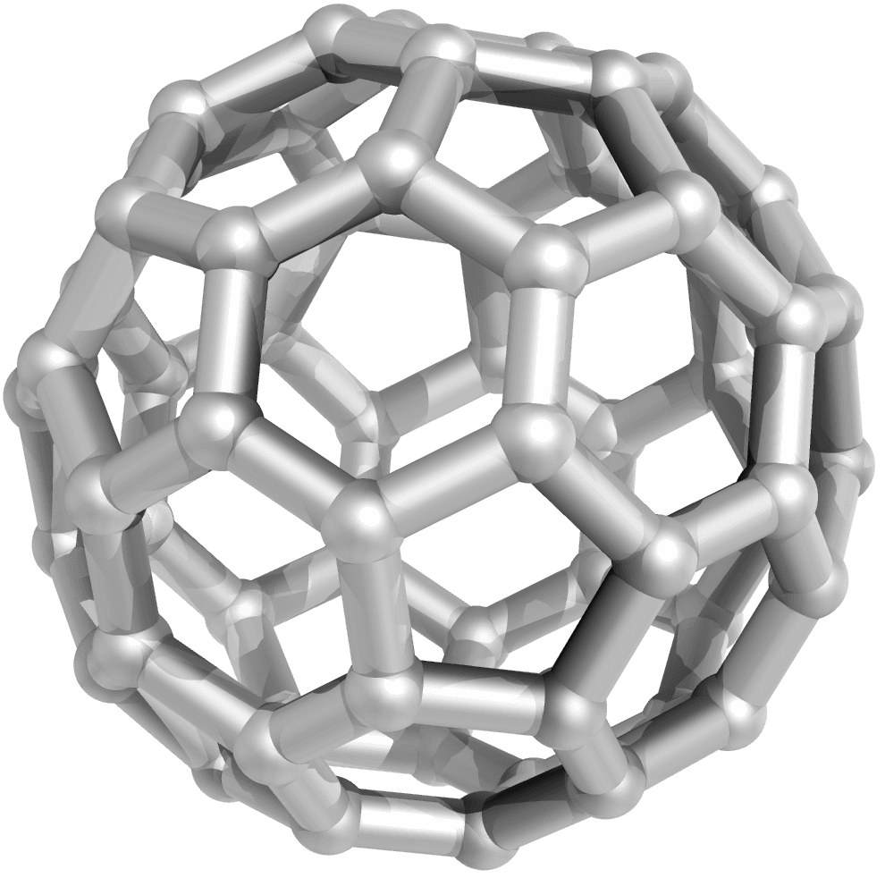

El Carbono: El Elemento de la Vida y la Nanotecnología
El carbono es un elemento único en la tabla periódica, capaz de formar más compuestos que todos los otros elementos juntos. En esta subunidad exploraremos las extraordinarias formas nanométricas del carbono que están transformando la medicina moderna.
Objetivos de Aprendizaje
- Comprender la estructura y propiedades únicas de los fulerenos, nanotubos y grafeno
- Analizar los diferentes tipos de nanotubos de carbono y sus aplicaciones biomédicas
- Evaluar las propiedades extraordinarias del grafeno y sus derivados bidimensionales
- Dominar técnicas de funcionalización para mejorar la biocompatibilidad
- Diseñar aplicaciones médicas específicas basadas en nanomateriales de carbono
Desde el descubrimiento de los fulerenos en 1985, seguido por los nanotubos en 1991 y el grafeno en 2004, los nanomateriales de carbono han abierto nuevas fronteras en la ciencia de materiales y la medicina. Estas estructuras combinan propiedades mecánicas, eléctricas y térmicas extraordinarias con una versatilidad química sin precedentes.
Temas Principales
🏀 Fulerenos: Moléculas Esféricas de Carbono
Los fulerenos son moléculas esféricas, elípticas o tubulares compuestas completamente de carbono, que representan la tercera forma alotrópica del carbono después del diamante y el grafito.
🔵 Estructura del Fullereno C60
El fullereno más conocido es el C60, también llamado "buckybola", que consiste en 60 átomos de carbono organizados en 20 hexágonos y 12 pentágonos, formando una estructura que se asemeja a un balón de fútbol.
Estructura del C60
Estructura esférica con 60 vértices (átomos de carbono) y 32 caras (12 pentágonos + 20 hexágonos)
Analogía: Balón de fútbol molecular
Imagina un balón de fútbol clásico con sus parches hexagonales y pentagonales. El C60 tiene exactamente la misma distribución, pero a escala nanométrica. Cada "costura" del balón es un enlace químico entre átomos de carbono, creando una esfera increíblemente estable.
Descubrimiento histórico
Los fulerenos fueron descubiertos accidentalmente en 1985 por Harold Kroto, Robert Curl y Richard Smalley, quienes recibieron el Premio Nobel de Química en 1996. Estaban investigando moléculas de carbono en el espacio interestelar cuando encontraron esta nueva forma de carbono.
El nombre "fullereno" es un homenaje al arquitecto Buckminster Fuller, famoso por sus estructuras geodésicas que siguen el mismo principio geométrico.
⚡ Propiedades únicas de los fulerenos
Los fulerenos poseen un conjunto extraordinario de propiedades físicas y químicas que los hacen únicos entre los nanomateriales:
Propiedades electrónicas
Los fulerenos son excelentes aceptores de electrones, con una afinidad electrónica de 2.6-2.8 eV. Esto significa que pueden "robar" electrones fácilmente a otras moléculas, lo que los hace poderosos antioxidantes.
Aplicación: Neuroprotección
Los fulerenos funcionalizados pueden atravesar la barrera hematoencefálica y actuar como "esponjas" de radicales libres en el cerebro. En modelos de enfermedad de Parkinson, han demostrado proteger las neuronas del estrés oxidativo, reduciendo la progresión de la enfermedad.
Es como tener millones de pequeños guardaespaldas moleculares que protegen a las células cerebrales de los ataques de los radicales libres, moléculas dañinas que aceleran el envejecimiento y causan enfermedades neurodegenerativas.
Solubilidad y funcionalización
Los fulerenos puros son insolubles en agua, lo que limita sus aplicaciones biológicas. Sin embargo, pueden funcionalizarse añadiendo grupos químicos solubles en agua, como grupos hidroxilo (fullerenol) o cadenas de polietilenglicol.
Imagina una pelota de playa: si la pintas con una capa especial, puede flotar de manera diferente en el agua. De la misma forma, al añadir grupos químicos a los fulerenos, podemos controlar cómo interactúan con los sistemas biológicos.
🎯 Aplicaciones biomédicas de los fulerenos
La estructura única de los fulerenos permite aplicaciones médicas innovadoras que van más allá de las capacidades de las moléculas tradicionales:
Transporte de fármacos
La cavidad interna de los fulerenos puede albergar átomos metálicos o pequeñas moléculas de fármacos. Por ejemplo, los endohedral fullerenes contienen átomos de gadolinio en su interior y se utilizan como agentes de contraste mejorados para resonancia magnética.
Es como tener una cápsula de transporte indestructible que protege el fármaco durante su viaje por el cuerpo y solo lo libera cuando llega a su destino, evitando efectos secundarios en otros tejidos.
Terapia fotodinámica
Los fulerenos pueden generar especies reactivas de oxígeno cuando se iluminan con luz de longitud de onda específica. Esta propiedad se utiliza en terapia fotodinámica para destruir células cancerosas de manera selectiva.
Imagina soldados que solo se activan cuando les das una señal con una linterna especial. Los fulerenos en terapia fotodinámica funcionan así: se acumulan en el tumor y solo se vuelven tóxicos para las células cancerosas cuando los iluminamos con luz específica.
Inhibición del VIH
Algunos derivados de fullereno pueden unirse al sitio activo de la proteasa del VIH-1, una enzima esencial para la replicación del virus. Bloquean esta enzima como una llave que encaja perfectamente en una cerradura, impidiendo que el virus se reproduzca.
🧪 Nanotubos de Carbono: Los Tubos Más Pequeños del Mundo
Los nanotubos de carbono son cilindros huecos formados por láminas de grafeno enrolladas, con diámetros de apenas 1-2 nanómetros pero longitudes que pueden alcanzar varios micrómetros.
🌀 Estructura y tipos de nanotubos
Los nanotubos de carbono se clasifican según la forma en que se enrolla la lámina de grafeno, lo que determina sus propiedades eléctricas y mecánicas:
Estructura de nanotubos
Láminas de grafeno enrolladas formando tubos con diferentes quiralidades (ángulos de enrollamiento)
Analogía: Enrollar una hoja de papel
Imagina que tienes una hoja de papel cuadriculado (que representa el grafeno). Puedes enrollarla de diferentes maneras: directamente a lo largo de una línea de cuadrados (nanotubo zigzag), en diagonal (nanotubo quiral), o perpendicular a las líneas (nanotubo armchair). Cada forma de enrollar crea un tubo con propiedades diferentes.
- Nanotubos armchair: Metálicos - conducen la electricidad perfectamente
- Nanotubos zigzag: Semiconductores - pueden activarse o desactivarse como transistores
- Nanotubos quirales: Semiconductores con bandgap específico según el ángulo de enrollamiento
Vector quiral (n,m)
La estructura de un nanotubo se define por el vector quiral C = na₁ + ma₂, donde n y m son enteros. Cuando |n-m| es múltiplo de 3, el nanotubo es metálico; en caso contrario, es semiconductor.
Esta simple regla matemática nos permite "programar" las propiedades eléctricas de los nanotubos durante su síntesis, creando materiales a medida para aplicaciones específicas.
💪 Propiedades extraordinarias
Los nanotubos de carbono poseen combinaciones de propiedades que no se encuentran en ningún otro material conocido:
Resistencia mecánica
Los nanotubos son el material más resistente conocido, con una resistencia a la tracción 100 veces mayor que el acero, pero con solo 1/6 de su densidad. Un solo nanotubo puede soportar pesos millones de veces superiores al suyo propio.
Si pudiéramos crear un cable del grosor de un hilo de araña con nanotubos de carbono, sería capaz de levantar un automóvil sin romperse. Esta resistencia extraordinaria es invaluable para aplicaciones como implantes ortopédicos que deben soportar cargas mecánicas.
Conductividad térmica y eléctrica
Los nanotubos metálicos pueden transportar corrientes eléctricas 1000 veces mayores que los cables de cobre del mismo diámetro. Además, son excelentes conductores del calor, superando incluso al diamante.
Esta combinación de propiedades los hace ideales para interfaces neuronales, donde necesitamos materiales que conduzcan señales eléctricas eficientemente sin sobrecalentarse en el delicado tejido cerebral.
Aplicación: Andamios tisulares
Las redes de nanotubos pueden servir como andamios para el crecimiento de tejidos como hueso o cartílago. Su estructura porosa permite que las células se adhieran y migren, mientras que su conductividad eléctrica puede estimular la regeneración tisular.
Es como construir un edificio con andamios inteligentes que no solo sostienen la estructura, sino que también envían señales a los trabajadores (células) indicándoles dónde y cómo construir.
🎯 Aplicaciones biomédicas avanzadas
La versatilidad de los nanotubos de carbono ha permitido el desarrollo de aplicaciones médicas que parecían ciencia ficción hace solo unas décadas:
Administración dirigida de fármacos
Los nanotubos pueden funcionalizarse con fármacos en su superficie exterior y con moléculas de targeting en sus extremos. Esta arquitectura permite transportar grandes cargas de medicamento directamente a células específicas.
Imagina un tren de carga molecular: los vagones (superficie del nanotubo) llevan el medicamento, mientras que la locomotora (extremo funcionalizado) busca específicamente la estación correcta (células diana).
Biosensores ultrasensibles
Los nanotubos semiconductores cambian su conductividad eléctrica cuando moléculas específicas se unen a su superficie. Esto permite detectar biomarcadores de enfermedades en concentraciones increíblemente bajas, permitiendo diagnósticos extremadamente precoces.
Es como tener una alarma de humo tan sensible que puede detectar una sola cerilla encendida a kilómetros de distancia. Los biosensores de nanotubos pueden detectar unas pocas moléculas de un marcador tumoral entre billones de moléculas normales.
Interfaces neuronales
Los nanotubos pueden formar interfaces estables con neuronas, registrando su actividad eléctrica con una resolución sin precedentes. Esto está revolucionando nuestra comprensión del cerebro y el desarrollo de prótesis neurales.
Piensa en conectar cables microscópicos directamente a las células cerebrales para "escuchar" sus conversaciones. Los nanotubos son tan pequeños y biocompatibles que pueden hacer esto sin dañar las neuronas, abriendo la posibilidad de tratar enfermedades como el Parkinson o la epilepsia con una precisión nunca antes alcanzada.
📜 Grafeno: El Material Bidimensional
El grafeno es una sola capa de átomos de carbono organizados en un patrón hexagonal, formando el material más delgado del universo con solo un átomo de grosor.
🛡️ Estructura y propiedades únicas
El grafeno consiste en una red hexagonal perfecta de átomos de carbono, donde cada átomo está unido a tres vecinos mediante enlaces sp² extremadamente fuertes.
Estructura del grafeno
⚪⚪⚪
⚪⚪⚪
Patrón hexagonal de átomos de carbono con solo un átomo de grosor
Analogía: Una rejilla de alambre infinitamente fina
Imagina una malla de alambre tan fina que tiene el grosor de un solo átomo, pero tan resistente que podrías extenderla sobre un estadio de fútbol y caminar sobre ella. El grafeno es así: increíblemente delgado pero más fuerte que el acero, flexible como el plástico y transparente como el vidrio.
Propiedades extraordinarias
El grafeno posee un conjunto de propiedades que lo hacen único:
- Transparencia: Absorbe solo 2.3% de la luz, siendo prácticamente invisible
- Conductividad: Los electrones se mueven 100 veces más rápido que en el silicio
- Flexibilidad: Puede estirarse hasta 20% de su longitud sin romperse
- Impermeabilidad: Ni siquiera el helio, el gas más pequeño, puede atravesarlo
Estructura de bandas del grafeno
El grafeno es un semiconductor con bandgap cero, lo que significa que sus bandas de valencia y conducción se tocan en puntos específicos (puntos K de la zona de Brillouin). Esta estructura electrónica única es responsable de sus extraordinarias propiedades de transporte.
🔄 Derivados del grafeno
El grafeno puede modificarse químicamente para crear una familia de materiales con propiedades ajustables para aplicaciones específicas:
Óxido de grafeno (GO)
El óxido de grafeno contiene grupos oxigenados (epoxi, hidroxilo, carboxilo) que lo hacen soluble en agua y más fácil de procesar. Aunque pierde parte de la conductividad del grafeno prístino, gana en versatilidad química.
Es como tomar una lámina perfecta de grafeno y añadirle "agarraderas" químicas que nos permiten manipularla más fácilmente y unirle otras moléculas para aplicaciones biomédicas.
Grafeno reducido (rGO)
El grafeno reducido se obtiene eliminando parcialmente los grupos oxigenados del óxido de grafeno, recuperando así parte de su conductividad eléctrica mientras mantiene cierta funcionalidad química.
Imagina que tenemos un material que combina lo mejor de ambos mundos: la procesabilidad del óxido de grafeno con la conductividad del grafeno puro. Esto es especialmente útil para biosensores que necesitan tanto sensibilidad como facilidad de fabricación.
Nanocintas de grafeno
Las nanocintas de grafeno son tiras estrechas de grafeno con anchos de apenas unos nanómetros. Dependiendo de su anchura y del patrón de sus bordes, pueden ser metálicas o semiconductoras, abriendo la posibilidad de crear circuitos electrónicos completos con un solo material.
Es como poder tallar cables y transistores microscópicos en una lámina de carbono del grosor de un átomo, creando electrónica flexible y transparente que podría integrarse directamente con tejidos biológicos.
🏥 Aplicaciones médicas del grafeno
Las propiedades únicas del grafeno están impulsando revoluciones en múltiples áreas de la medicina:
Ingeniería de tejidos
Los andamios de grafeno proporcionan un sustrato ideal para el crecimiento celular. Su flexibilidad se adapta a los movimientos naturales del cuerpo, mientras que su conductividad eléctrica puede estimular la diferenciación de células madre.
Es como proporcionar a las células un "terreno de cultivo" inteligente que no solo las sostiene físicamente, sino que también les envía señales eléctricas que guían su desarrollo hacia tejidos específicos como hueso, cartílago o músculo.
Sistemas de liberación de fármacos
El enorme área superficial del grafeno (hasta 2630 m²/g) permite cargar cantidades extraordinarias de fármacos. Además, puede funcionalizarse con moléculas que responden a estímulos específicos (pH, enzimas) para liberar su carga solo en el lugar correcto.
Imagina una esponja del grosor de un átomo que puede absorber 100 veces su peso en medicamento y liberarlo exactamente donde se necesita. El grafeno hace posible esta hazaña aparentemente imposible.
Implantes neurales
La combinación de flexibilidad, biocompatibilidad y conductividad hace del grafeno un material ideal para interfaces cerebro-máquina. Los electrodos de grafeno pueden monitorizar la actividad neuronal con una resolución sin precedentes mientras minimizan la respuesta inflamatoria.
Estamos cerca de poder conectar dispositivos electrónicos directamente al cerebro con una precisión y seguridad nunca antes logradas. Esto podría permitir a personas con parálisis controlar prótesis con el pensamiento o restaurar la visión mediante implantes retinales de grafeno.
🔧 Funcionalización y Biocompatibilidad
La funcionalización química es clave para convertir los nanomateriales de carbono en herramientas médicas seguras y efectivas, controlando su interacción con sistemas biológicos.
🧩 Estrategias de funcionalización
Existen múltiples enfoques para modificar químicamente la superficie de los nanomateriales de carbono, cada uno con ventajas específicas:
Analogía: Personalizar un automóvil
Compras un automóvil básico (el nanomaterial de carbono puro) y lo personalizas según tus necesidades: pintura especial para que sea visible (marcadores fluorescentes), asientos cómodos para los pasajeros (grupos de solubilidad), y un GPS que lo lleve al destino correcto (moléculas de targeting). La funcionalización hace lo mismo con los nanomateriales.
Funcionalización covalente
Implica crear enlaces químicos fuertes entre el carbono y grupos funcionales específicos. Por ejemplo, la reacción de 1,3-dipolar cicloadición permite unir una amplia variedad de moléculas a los fullerenos de manera controlada.
Es como soldar piezas adicionales permanentemente a una estructura: muy estable pero que modifica las propiedades originales del material.
Funcionalización no covalente
Utiliza interacciones más débiles como enlaces de hidrógeno, interacciones π-π o fuerzas electrostáticas para adsorber moléculas en la superficie sin alterar químicamente el nanomaterial.
Es como usar velcro en lugar de pegamento: menos permanente pero que preserva las propiedades extraordinarias del material original.
🛡️ Mejora de la biocompatibilidad
La biocompatibilidad determina si un material puede coexistir pacíficamente con sistemas biológicos sin causar daño:
PEGilación
La unión de cadenas de polietilenglicol (PEG) crea una "nube" hidratada alrededor del nanomaterial que reduce la adsorción de proteínas y el reconocimiento por el sistema inmunológico, prolongando su tiempo de circulación en sangre.
Es como ponerle un disfraz de invisibilidad a las nanopartículas para que pasen desapercibidas por los radares del sistema inmunológico, permitiéndoles llegar a su destino sin ser interceptadas.
Funcionalización con biomoléculas
Unir péptidos, anticuerpos o azúcares específicos permite dirigir los nanomateriales a células o tejidos particulares. Por ejemplo, el péptido RGD se une a integrinas sobreexpresadas en células cancerosas.
Imagina poner códigos postales moleculares en las nanopartículas. Solo las células con la dirección correcta las dejarán entrar, asegurando que el tratamiento llegue específicamente donde se necesita.
Control de la toxicidad
La funcionalización puede reducir significativamente la toxicidad de los nanomateriales de carbono. Por ejemplo, los fullerenos puros pueden generar estrés oxidativo, pero los fullerenoles (con grupos OH) son potentes antioxidantes.
Es como domar una fuerza poderosa: el mismo material que en su forma pura podría ser dañino, se convierte en una herramienta terapéutica cuando lo modificamos correctamente.
🎯 Aplicaciones de nanomateriales funcionalizados
La combinación de nanomateriales de carbono con funcionalizaciones específicas está permitiendo aplicaciones médicas de precisión sin precedentes:
Terapia térmica dirigida
Nanotubos funcionalizados con anticuerpos contra receptores tumorales pueden acumularse selectivamente en cánceres. Cuando se irradian con luz infrarroja, generan calor localizado que destruye solo las células cancerosas.
Es como tener misiles teledirigidos que solo atacan al enemigo (células cancerosas) cuando les das la orden (luz infrarroja), dejando intactos a los civiles (células sanas).
Diagnóstico por imagen multimodal
Los nanomateriales de carbono pueden funcionalizarse con múltiples agentes de contraste simultáneamente, permitiendo visualizar los mismos tejidos con diferentes técnicas (MRI, PET, fluorescencia) para obtener información complementaria.
Imagina poder ver un tumor con el detalle anatómico de una resonancia magnética, la actividad metabólica de un PET y la resolución celular de un microscopio fluorescente, todo con la misma inyección de contraste.
Terapia génica
El óxido de grafeno funcionalizado puede unirse y proteger al ARN de interferencia, transportándolo específicamente a células diana para silenciar genes causantes de enfermedades.
Es como tener un servicio de correo molecular que entrega instrucciones precisas directamente al centro de mando de la célula (el núcleo), diciéndole que apague genes específicos que están causando problemas.
Prácticas de Laboratorio
🧪 Protocolos Experimentales
Protocolo 1: Síntesis de Óxido de Grafeno por el Método de Hummers
Objetivo: Sintetizar óxido de grafeno a partir de grafito y caracterizar su estructura y propiedades.
- Mezclar grafito en polvo con NaNO₃ y H₂SO₄ concentrado en un baño de hielo.
- Añadir lentamente KMnO₄ manteniendo la temperatura por debajo de 20°C.
- Calentar la mezcla a 35°C y agitar durante 30 minutos.
- Añadir agua destilada lentamente (¡cuidado con la reacción exotérmica!).
- Calentar a 98°C durante 15 minutos y luego diluir con agua caliente.
- Añadir H₂O₂ al 30% hasta que cese la efervescencia.
- Lavar repetidamente con HCl diluido y agua hasta pH neutro.
- Secar y caracterizar por espectroscopía Raman y XRD.
Protocolo 2: Funcionalización de Nanotubos con PEG
Objetivo: Mejorar la solubilidad en agua y biocompatibilidad de nanotubos de carbono mediante PEGilación.
- Oxidar nanotubos con mezcla H₂SO₄/HNO₃ para crear grupos carboxilo.
- Lavar hasta pH neutro y secar.
- Activar grupos carboxilo con EDC/NHS en buffer MES.
- Añadir amina-PEG (MW 2000-5000) y agitar durante 24 horas.
- Purificar por diálisis o ultracentrifugación.
- Caracterizar por FTIR y espectroscopía UV-Vis.
- Evaluar solubilidad en diferentes medios acuosos.
Protocolo 3: Evaluación de Citocompatibilidad
Objetivo: Determinar la toxicidad de nanomateriales de carbono en cultivos celulares.
- Sembrar células en placas de 96 pocillos y dejar adherir overnight.
- Preparar diluciones seriadas de los nanomateriales en medio de cultivo.
- Tratar las células con diferentes concentraciones durante 24-72 horas.
- Añadir reactivo MTT y incubar 4 horas.
- Disolver formazán con DMSO y leer absorbancia a 570 nm.
- Calcular viabilidad celular relativa al control no tratado.
- Determinar concentración inhibitoria 50% (IC50).
Protocolo 4: Caracterización Estructural por Microscopía Raman
Objetivo: Analizar la estructura y calidad de nanomateriales de carbono mediante espectroscopía Raman.
- Preparar muestras en portaobjetos de silicio ultra limpio.
- Configurar el microscopio Raman con láser de 532 nm.
- Enfocar en la muestra y ajustar la potencia del láser.
- Adquirir espectros en múltiples puntos de la muestra.
- Analizar las bandas D (1350 cm⁻¹), G (1580 cm⁻¹) y 2D (2700 cm⁻¹).
- Calcular la relación Iᴅ/Iɢ como indicador de defectos.
- Para grafeno, analizar forma y posición de la banda 2D.
Recursos de Aprendizaje
Visualizaciones 3D
Modelos interactivos de fulerenos, nanotubos y grafeno para comprender sus estructuras atómicas.
Explorar ModelosArtículos Fundacionales
Los trabajos originales de descubrimiento de estos materiales y sus aplicaciones pioneras.
Acceder a ArtículosSimulaciones Computacionales
Herramientas para simular propiedades electrónicas y mecánicas de nanomateriales de carbono.
Usar SimulacionesProtocolos Avanzados
Métodos detallados para síntesis, funcionalización y caracterización de materiales de carbono.
Ver ProtocolosEvaluación del Aprendizaje
Cuestionario Estructural
Evaluación de comprensión de las diferentes estructuras de carbono y sus propiedades.
Realizar CuestionarioDiseño de Aplicaciones
Propuesta de aplicaciones médicas específicas utilizando diferentes nanomateriales de carbono.
Presentar DiseñoAnálisis de Datos Experimentales
Interpretación de resultados de caracterización de nanomateriales de carbono.
Analizar DatosRevisión de Literatura
Análisis crítico de artículos científicos sobre aplicaciones biomédicas de materiales de carbono.
Directrices